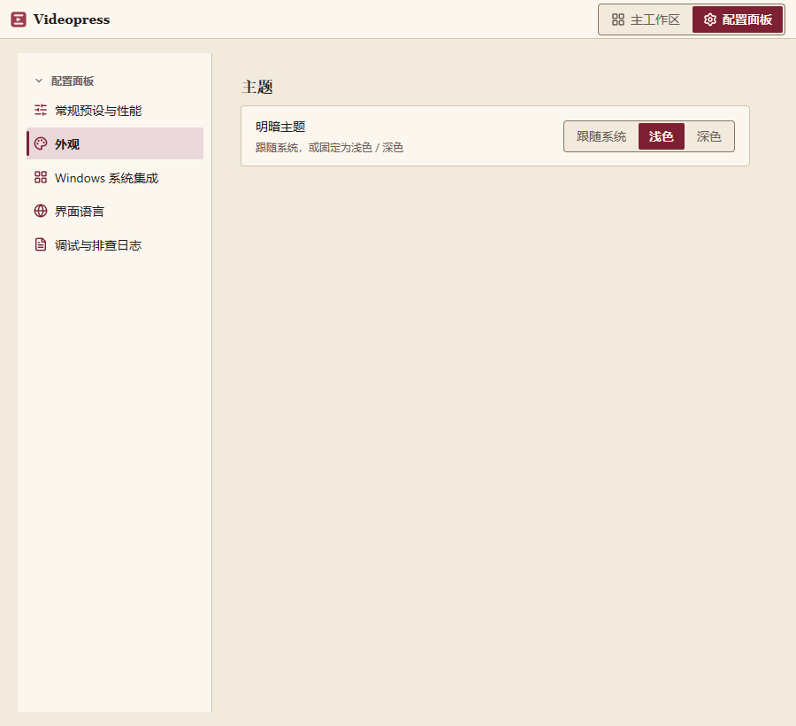
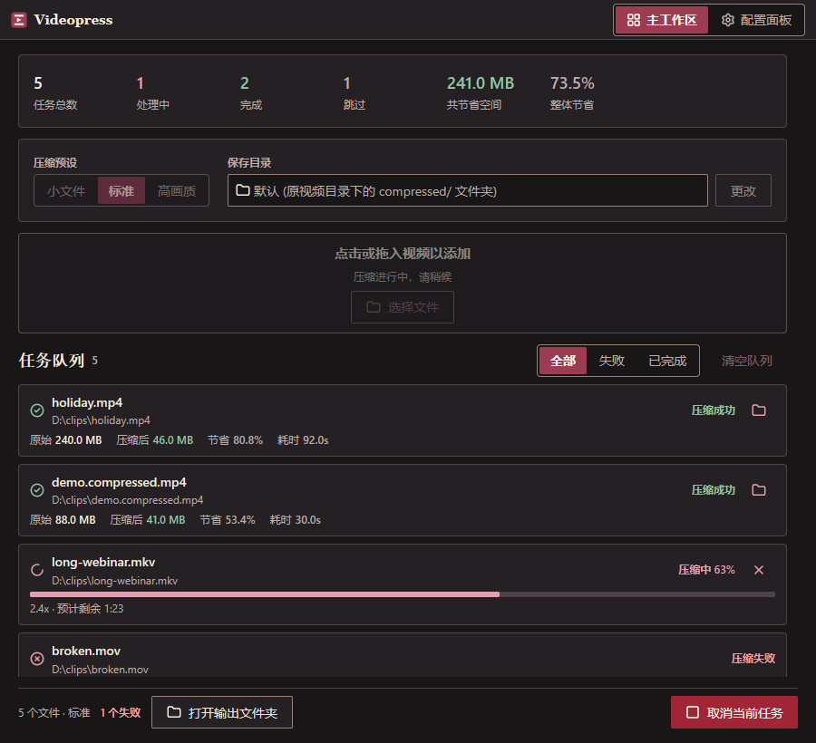

安装版
videopress-setup-<版本>-amd64.exe
包含开始菜单入口与标准卸载流程，适合日常固定使用。
双击安装 → 从开始菜单启动 → 按引导自动配置或指定 FFmpeg。
基于 FFmpeg，单文件集成原生桌面界面与命令行。提供三档实测预设、并发队列、GPU 硬件编码、几何裁剪以及 GIF / APNG / WebP 动图导出。

所有预设对应确定的缩放、CRF 与音频码率参数，无需记忆 FFmpeg 命令，也支持在高级面板中逐项覆盖。
| 预设 | 缩放比例 | 分辨率上限 | 默认 CRF | 编码速度档 | 音频码率 (AAC) | 适用场景 |
|---|---|---|---|---|---|---|
| 小文件 (small) | 33% | 480px | 30 | veryfast / SVT-AV1 8 | 64k | 聊天发送、低流量预览 |
| 标准 (standard · 默认) | 50% | 720px | 27 | faster / SVT-AV1 6 | 96k | 网页嵌入、文档附带与日常归档 |
| 高画质 (quality) | 100% | 保持原分辨率 | 24 | medium / SVT-AV1 4 | 128k | 保留原始分辨率的长期存档 |
按 NVENC → QSV → AMF 顺序并发探测本机显卡编码器（单项超时 1.5s），结果缓存至本地，不可用时自动回退 CPU 软编。
| 视频编码 | 硬件编码器 | CPU 回退 | 建议 CRF |
|---|---|---|---|
| H.264 | h264_nvenc / qsv / amf | libx264 | 18–28 |
| H.265 (HEVC) | hevc_nvenc / qsv / amf | libx265 | 20–30 |
| AV1 | av1_nvenc / qsv / amf | libsvtav1 | 24–38 |
可覆盖预设默认值，按编码格式提供建议参考区间，硬件编码自动映射至 QP / global_quality。
支持 AAC 重编码、音频流无损直通（copy）或静音移除音轨（mute），并可限制最大帧率（如 30fps）缩减录屏体积。
在缩放前裁除画面多余边栏，支持精确像素（W:H:X:Y）或居中比例（如 16:9 配合 0.5–1.0 保留比例），默认关闭。
基于 MyGO 与 MujicaUI 纯 Go 自绘，无 WebView 开销；遵循同一套酒红与象牙配色，默认跟随系统明暗。

支持同时导出 GIF（128 色调色板）、APNG（无损 RGBA 自适应帧率）与 WebP（libwebp_anim）。
| 档位 | 宽度上限 | 体积目标 | 帧率 | 片段时长 | WebP 质量 |
|---|---|---|---|---|---|
| 流畅 (smooth) | 240px | ≤ 1 MB | 15 fps | 5s | 35 |
| 均衡 (balanced · 默认) | 360px | ≤ 2 MB | 15 fps | 5s | 50 |
| 高清 (hd) | 480px | ≤ 5 MB | 15 fps | 5s | 65 |
| 自定义 (GUI) | 120–1080px | 1–50 MB | 5–30 fps | 1–30s（起点 0–600s） | 30–90 |
双击或无选项启动进入图形界面；在终端传入任意选项即进入控制台模式，输出进度条、压缩汇总表，并在输出目录追加 compress_summary.log。
勾选所需参数，实时生成可直接运行的 videopress.exe 命令。
videopress.exe --preset standard "C:\videos\clip.mp4"
videopress.exe --preset small --hw -a "C:\videos\clip.mp4"
videopress.exe --crop-center 16:9 --crop-scale 0.9 "C:\videos\recording.mp4"
videopress.exe -c 3 --skip-existing "C:\videos\a.mp4" "C:\videos\b.mp4" "C:\videos\c.mp4"
所有系统入口均只写入当前用户配置，无需管理员权限；右键多选视频时自动合并到同一窗口队列。
资源管理器右键视频选择「使用 Videopress 压缩」，切换界面语言时自动同步菜单名称。
右键 → 发送到 →「快速压缩视频」，完成后弹出系统通知。
在配置面板按需开关，方便搜索启动或拖放图标。
将程序目录加入当前用户 Path，随后可在任意终端直接调用 videopress。
除配置面板外，也可直接通过终端管理 SendTo 与用户 Path：
videopress.exe --install-sendto / --uninstall-sendto
videopress.exe --install-path / --uninstall-path
支持 MP4、MOV、MKV、AVI、M4V、WMV、WEBM、TS、FLV、MPG、MPEG、3GP。每次批处理会在输出目录追加 compress_summary.log，记录原始大小、压缩后大小、节省比例与耗时。
在 GitHub Releases 提供安装版与便携版两种分发包，均附 SHA256SUMS.txt 校验文件。
videopress-setup-<版本>-amd64.exe
包含开始菜单入口与标准卸载流程，适合日常固定使用。
双击安装 → 从开始菜单启动 → 按引导自动配置或指定 FFmpeg。
Videopress.exe
单文件可执行程序，无需安装或管理员权限，适合放工具目录或移动硬盘。
放入独立目录直接运行；离线机器可将 ffmpeg.exe 置于同目录。
当前发布包暂未进行代码签名，首次运行可能弹出 SmartScreen「Windows 已保护你的电脑」，点击「更多信息 → 仍要运行」即可。可使用 PowerShell 运行 Get-FileHash 核对下载页附带的 SHA256SUMS.txt。
Get-FileHash .\Videopress.exe -Algorithm SHA256
支持 Windows 10 / 11（x64）。用户偏好保存在 %APPDATA%\Videopress\settings.json，GPU 探测缓存保存在 %LOCALAPPDATA%\videopress_gpu.cache。